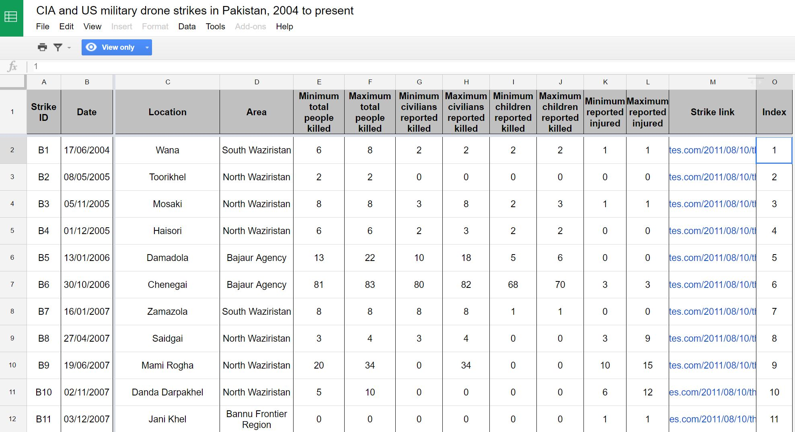

Group 2
Out of Sight, Out of Mind
A Critique on Data and Visualization
1. Data Sources
Primary Source

Other Sources
2. Visualization
What data is displayed.
What is included, or excluded. A deep dive into the data. Move through different sequenced views of data.
Framing
There is no affordance for customization on what data could be displayed at any given point. Universally, children, civilian, high profile, other appear together in the bar graph; children, civilian and other appear all at once in the mini pop-up window in time series graph and victim graph.
Navigating
Expand and explore greater level of detail in the displayed data. Mini pop-up windows offer granularity.
Animating
The time series graph and bar graph come with an animated sequence, which reveals the shifting nature of the time frame, drone strikes and death toll in view at any given point. However, this sequence is only automatic, not manual.
What’s more, when you land on the web page, the animation is automatically triggered. There is no way of control. It’s aesthetically pleasing to view; yet it doesn’t allow static exploration.
Sequencing
As you navigate through the sequence, a narrative is constructed. Storytelling with data.
It’s a guided experience.
At the beginning. Manually controlled reveal/fade.
Moment of pauses - where scripts appear in the screen that highlight key events. It facilitates understandings about the numbers with the context of these events. It frames our interpretation of these data.
Cinematic effects.
A predetermined different angle of analysis, through bar graph, time series to victim graph.
3. User Experience
Insert text and images here
4. User Interface
Color Composition

Font Type
Source® Sans Pro
Adobe's first open source typeface family, was designed by Paul D. Hunt. It is a sans serif typeface intended to work well in user interfaces.

5. Recommendations
Display images or photos while mouse hover over to make website more vital.

Have an interactive map to show the location of victims.

News display some images where mouse hover over to make it more attractive to read.